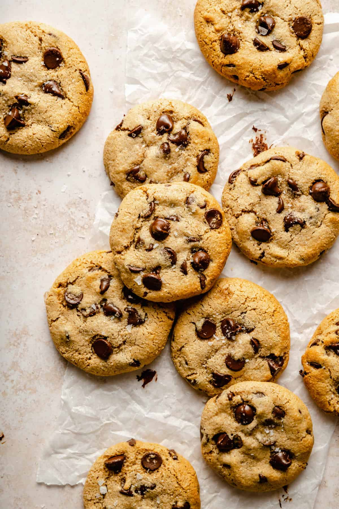

Chocolate Chip Cookies Recipe
Soft and Chewy Chocolate Chip Cookies

Ingredients
- 2 1/4 cups all-purpose flour
- 1 tsp baking soda
- 1 tsp salt
- 1 cup (2 sticks) unsalted butter, softened
- 3/4 cup granulated sugar
- 3/4 cup brown sugar, packed
- 1 tsp vanilla extract
- 2 large eggs
- 2 cups semi-sweet chocolate chips
Steps:
- Preheat your oven to 375°F (190°C).
- In a small bowl, combine flour, baking soda, and salt. Set aside.
- In a large bowl, beat butter, granulated sugar, brown sugar, and vanilla until creamy.
- Add eggs one at a time, beating well after each addition.
- Gradually add the dry ingredients to the wet ingredients.
- Stir in chocolate chips.
- Drop rounded tablespoons of dough onto ungreased baking sheets.
- Bake for 9-11 minutes or until golden brown.
- Cool on baking sheets for 2 minutes before transferring to wire racks.